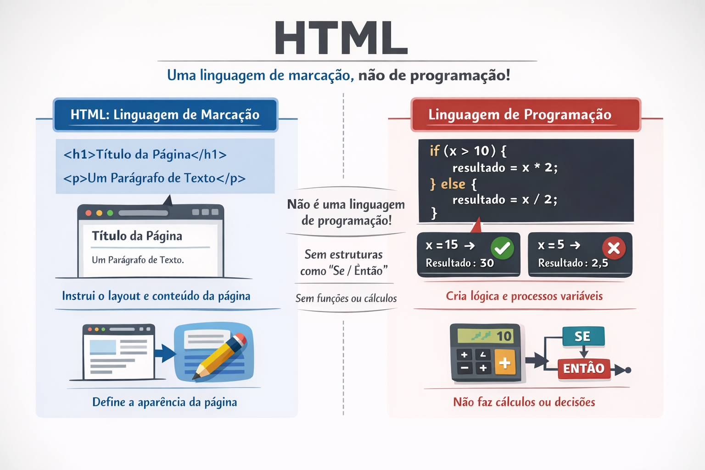

Historia do HTML
Historia do HTML
03/03/2026
Carlos eduardo & joão Alves
Para os absolutamente leigos sobre o assunto, dizer que é uma linguagem de programação, pode já dar uma
ideia sobre o que seja, porém consiste de uma ideia equivocada, pois não se trata exatamente disso. É
uma
linguagem, mas não é de programação.
O HTML, assim como toda linguagem usada em informática, é usada com a finalidade de instruir o sistema
no
qual é usada, para realizar ações. Mas ao contrário das linguagens de programação, ela não contém
estruturas
que produzem resultados variáveis, como é o caso de uma estrutura lógica “if / then” ou “se / então” ou
funções ou procedimentos, que entregam resultados a partir de outros dados.

HTML é a sigla para HyperText Markup Language, que por sua vez significa Linguagem de Marcação de
Hipertexto. Ou seja, na abreviação há um elemento que diferencia o HTML de outras linguagens utilizadas
em
sistemas informáticos e que é a MARCAÇÃO. Esse é o ponto de diferenciação do HTML e que ficará mais
evidente
logo mais.
O HTML foi criado por Tim Berners-Lee, como uma ferramenta que permitia acrescentar alguns elementos nos
textos usados por ele e um grupo de pesquisadores, na publicação dos seus trabalhos em uma época em que
a
Internet ainda dava seus primeiros passos. Como outras linguagens de marcação – o HTML não é a única –
era
possível dar distinções a determinados trechos de textos, como por exemplo, vincular ou linkar uma outra
obra científica a qual a primeira fizesse referência e que também estivesse publicada, na medida em que
os
primeiros “sites” começavam a surgir.
Era tudo muito rudimentar e bem diferente dos sites que temos hoje a nossa disposição, mas consistia de
um
início e que permitia criar mais do que uma simples página de texto corrido, como se tinha nos livros,
por
exemplo. E com isso você automaticamente já sabe que foi a linguagem que permitiu o desenvolvimento dos
primeiros sites. E se por um lado, muita coisa mudou, por outro saiba que algumas não mudaram e todo
site
que você acessa hoje, ainda usa o HTML, em maior ou menor grau.
É verdade que desde então o HTML evoluiu muito. A popularização da linguagem teve como ponto de partida
os
conceitos de Berners-Lee, lançando em 1995 a versão 2.0 do HTML, para ao longo de quatro anos, sofrer
mudanças e implementações que permitiram que em 1999 a versão mais usada até hoje – a 4.1 – fosse
lançada
pelo W3C, que é a comunidade que normatiza e desenvolve padrões para como devem ser as coisas na
Internet.
Confira nosso Site: A história da Internet